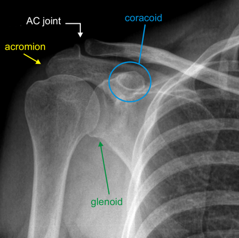
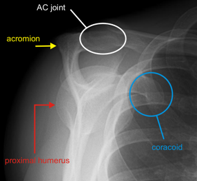
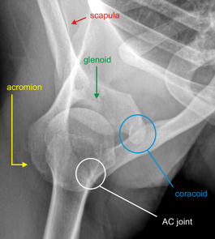

Imaging
Radiographs
- AP, scapular Y (45° from coronal plane) and axillary (shoulder abducted 70° and beam shot through the axilla) views of
the shoulder are standard examinations
- Axillary: better visualizes dislocations as well as impaction, glenoid and lesser tuberosity fractures

Normal AP shoulder

Normal scapular Y view

Normal axillary shoulder
- Velpeau: patient standing while leaning back 45° over cassette
- An alternative when patient cannot tolerate axillary view
- Stryker notch view: patient supine, hand on head, elbow up, bean 10° cephalad
- Helps identify corocoid fractures
- West Point axillary view: patient prone, beam 25° up from horizontal, aimed 25° medial
- Helps identify glenoid fractures
- CT: evaluation of intraarticular involvement/displacement and angulation for preoperative planning
- Useful for ruling out scapular/glenoid injuries